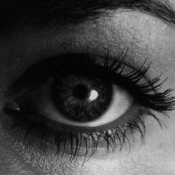
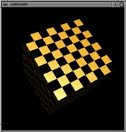

courses/
|
This is the software developed explicitly for the OpenGL courses at SIGGRAPH '97 and made available for you at the CAL. You can browse the source and run the demos through their various options. The software included in the rest of this package is also useful if you're learning OpenGL. Look at the stuff under examples/samples, examples/redbook, examples/more_samples, and toolkits/GLUT_Programs for more demos that allow you to examine the source and play with the features. |
|  |
Don't forget about the pixel paths. Yes, this is OpenGL. This program demonstrates how you can use convolutions and LUTS to make your images more interesting. Press the right mouse button to get a menu. Source code: eye.c. Executable: eye. Snapshots: eye (shown). |
{kind=link}
|  |
This is the demo that was used in the OpenGL intro course. You can play around with lighting/materials, projections, lines/polygons, etc. The right mouse button brings down a menu. The left mouse button moves the cube. The middle mouse button moves the light source. Source code: cube.c. Executable: cube. Snapshots: cube (shown). |
{kind=link}